Note that JGoodies FormLayout support is only
available in the Professional version of the product.
This layout also requires the use of the JGoodies FormLayout jar file
(forms-1.0.6.jar or higher).
- Main Features
- Popup Header Menu
- Graphical Feedback
- Column & Row Editing
- Preferences
- Source Code Generation & Parsing
This feature is based on technology from the JGoodies Forms.
http://www.jgoodies.com/freeware/forms/
Copyright © 2002-2009 JGoodies Karsten Lentzsch
Main Features
- Select JGoodies FormLayout from the Layouts palette and drop it on a JFrame or JPanel
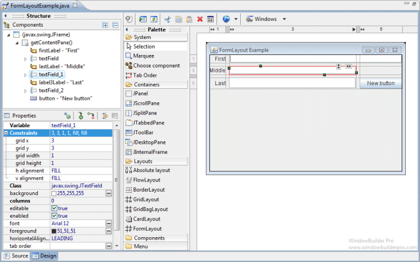
- The JGoodies FormLayout jar file (forms-1.1.0.jar) will automatically be added to your project and the classpath adjusted
- Graphical feedback is provided for all column, row and cell interactions
- Column and row properties may be changed via a popup menu or property dialog
- Convert existing layouts (null, GridBagLayout, etc.) to JGoodies FormLayout with intelligent column, row and gap creation
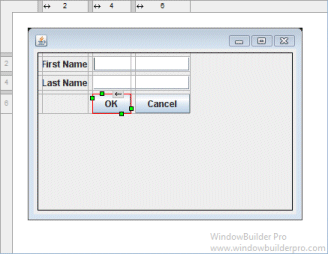
- Automatically add gaps when adding new columns or rows
Popup Header Menu
- Right-click on the header area to access the popup header menu
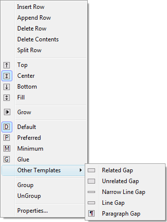 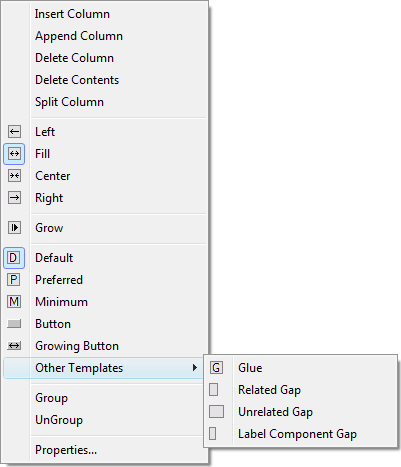
- Insert new columns or rows before the current column or row
- Add a new column or row at the end of the current list
- Delete entire columns or rows or just their widget contents
- Set the column alignment to left, right, center or fill
- Specify that the column or row should grow to fill the available space
- Group or ungroup columns or rows
- Set the sizing spec that should be used for the column or row (various column, row and gap types are available)
- Edit the properties of the current column or row
Graphical Feedback
- When moving a widget or adding a new widget, open cells are
highlighted green while populated cells are highlighted red and
insertion points are highlighted in yellow
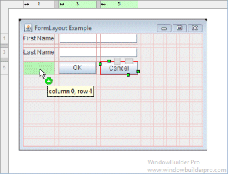 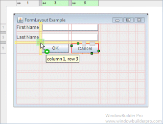 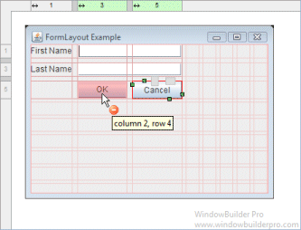
- Phantom drop point to the right and below the current cells
will create new columns, rows and gaps as needed
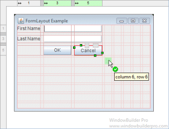 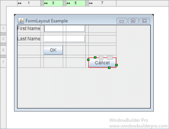
- The currently selected cell shows its column and row spanning
handles and alignment handles
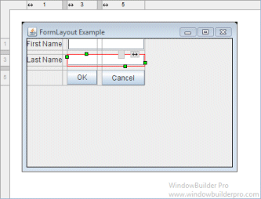
- Set the alignment of a cell using its popup alignment menu or the toolbar
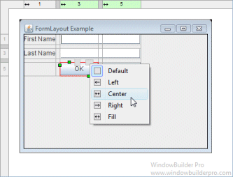 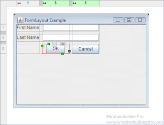
- Right-click on a column to set its grow property
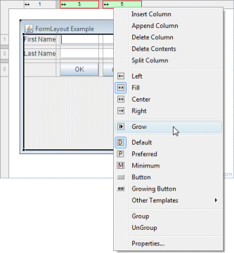 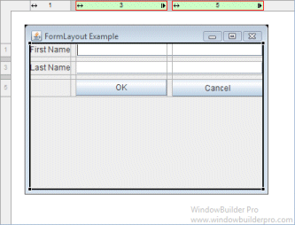
- Grouped columns and rows are color highlighted to indicate which are in the same group
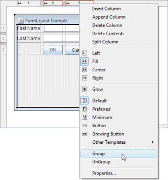 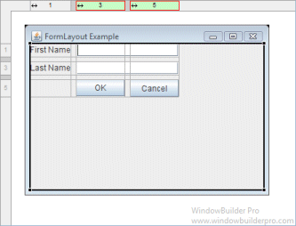 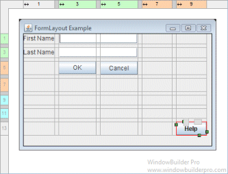
- Column and row sizing handles make it easy to set the size of a column or row
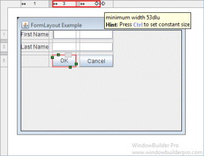 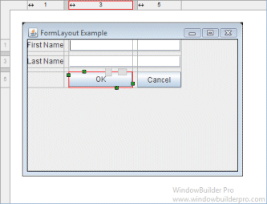
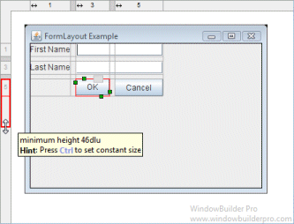 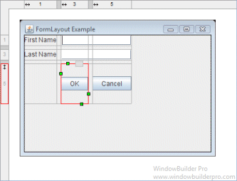
- Reorder columns and rows by dragging them (with their associated gap columns or rows)
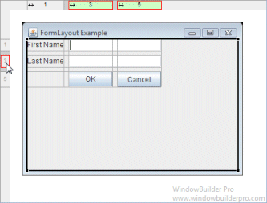 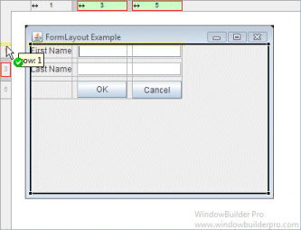 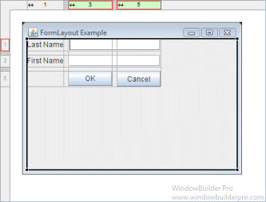
- Column and rows borders are indicated with gray lines
- Interactive column and row spanning feedback is provided
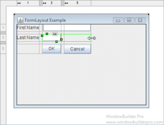 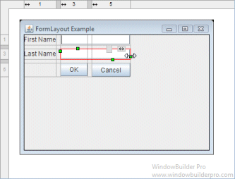
- Full keyboard support for quickly changing alignment values
Cells D default horizontal Shift+D default vertical F fill horizontal Shift+F fill vertical L, C, R left/center/right for horizontal T, M, B top/middle/bottom for vertical
Column & Row Editing
- Double click on a column or row to access its property dialog
- Switch between columns and rows using the arrow buttons
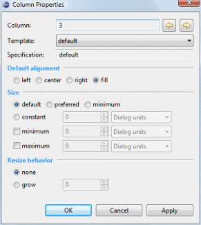 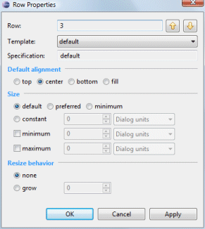
- Select from any of the predefined column or gap templates
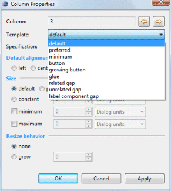 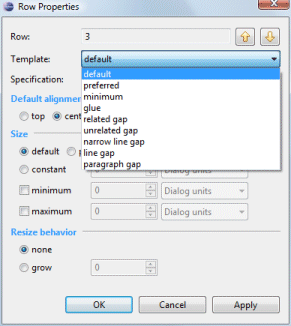
- Set the column or row alignment
- Specify the resize behavior and the relative weights of each column or row
- Set the size of the column or row
- Specify a constant size in a variety of units
- Specify minimum and maximum sizes
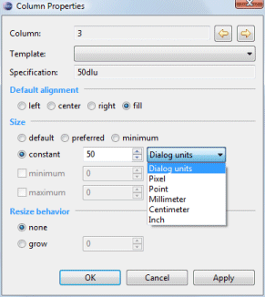 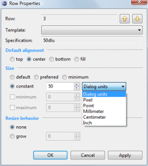
- Floating layout assistant for constraints

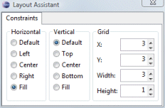
- Open the Columns or Rows editing dialog from the Property Pane or the right-click context menu of the panel.
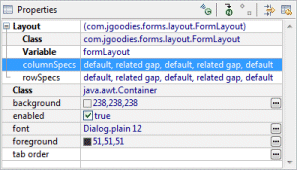

- Insert or add new columns and rows
- Open the property dialog for an individual column or row
- Group and ungroup columns or rows
- Rearrange the order of the columns or rows
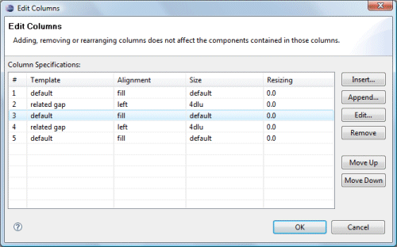
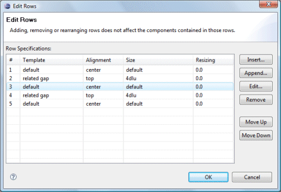
Preferences
- Control whether automatic grab is used for text widgets, comboboxes, tables, etc.
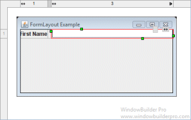 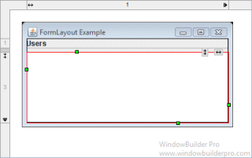
- Control whether labels are automatically right-aligned when next to a text widget
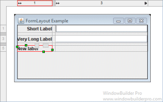 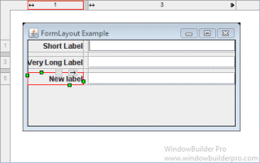
Source Code Generation & Parsing
- Intelligently convert existing layouts (null, GridBagLayout, etc.) to JGoodies FormLayout with column, row and gap creation
- Generated code will use predefined FormFactory constants as necessary
- Parser can understand reused CellConstraint objects
- Parser supports all CellConstraint styles
- Creation methods intended for use by humans
CellConstraints cc = new CellConstraints();
cc.xy(2, 1); // second col, first row
cc.xy(2, 1, "right, bottom"); // aligned to right and bottom
cc.xy(2, 1, "r, b"); // abbreviated alignment
cc.xywh(2, 1, 4, 3); // spans 4 cols, 3 rows
cc.xywh(2, 1, 4, 3, "right, bottom");
cc.xywh(2, 1, 4, 3, "r, b");
- Constructors intended for builders
new CellConstraints(); // first col, first row
new CellConstraints(2, 1);
new CellConstraints(2, 1, 4, 3);
new CellConstraints(2, 1, CellConstraints.RIGHT, CellConstraints.BOTTOM);
- Constructors intended for building UIs from XML
CellConstraints cc = new CellConstraints();
new CellConstraints("2, 1");
new CellConstraints("2, 1, r, b");
new CellConstraints("2, 1, 4, 3");
new CellConstraints("2, 1, 4, 3, r, b");
- Creation methods intended for use by humans
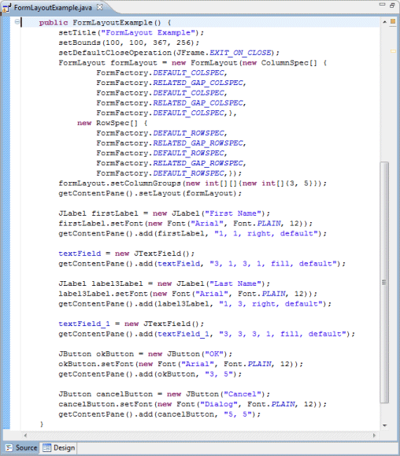